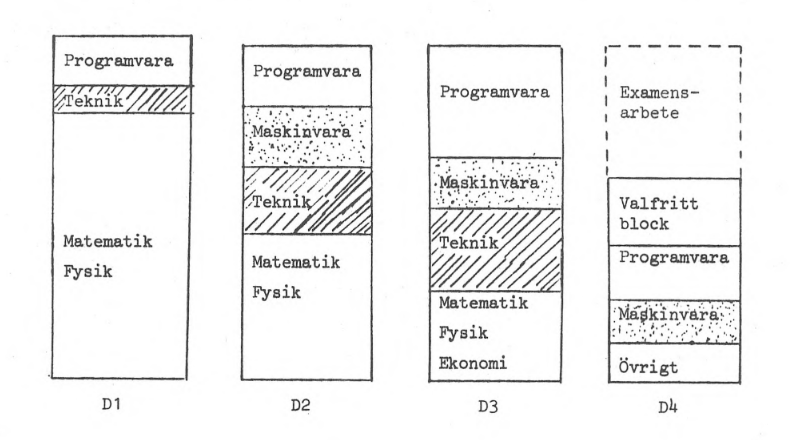
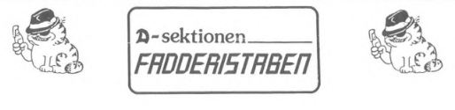
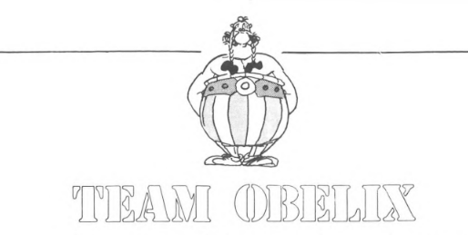

Jag ber om ursäkt för den tillfälliga oordningen. Denna sida är för närvarande under utveckling och kommer att bli en del av ett historieprojekt om Linköpings Universitet. Projektet leds av mig, Tyson Horvath, civilingenjörsstudent inom mjukvaruteknik vid LiTH. Om du har synpunkter eller önskar bidra till projektet, är du varmt välkommen att kontakta mig på isak.horvath@d-sektionen.se. Alla typer av material som på något sätt relaterar till universitetets historia, dess föreningar eller utbildningar är mycket uppskattade.
Tack för ditt bidrag!
//Tyson
Civilingenjörsprogrammet i datateknik startades under höstterminen 1975 med en intagning av 30 elever. Studerandesektionen (Datateknologsektionen) bildades 27 januari 1976 av 25 teknologer i sal R37 i C-huset på Campus Valla. Civilingenjörsprogrammet i informationsteknologi som använder sig av problembaserat lärande startades 1995 och blev en del av D-sektionen. I samband med att programmet Mjukvaruteknik startades så lades programmet Datavetenskap tillhörande C-sektionen ner. När detta skedde 2013 så beslutade det att en samanslagning av D-sektionen och C-sektionen skulle ske vilket medfört att efter det så representerar sektionen även Mjukvaruteknik och Innovativ programmering.
"Vi inom D-gruppen och senare D-utskottet, som är rådgivande till Tekniska Fakultetens Utbildningsnämnd vid Linköpings Tekniska Högskola, har gjort vad vi kunnat för att inom ramen för tillgängliga resurser få fram denna goda cigarr." säger Tord-Jöran Hallberg i ett dokument om Fakta om D-linjen. Tord-Jöran Hallberg var medlem i D-utskottet (För D-utskottets ordförande prof Erik Sandewall och D-gruppens ordförande prof Per-Erik Danielsson).
En preliminär studieplan utsändes i en enkät till ett stort antal slumpmässigt utvalda civilingenjörer med examen från Teknisk fysik och Elektroteknik. Av dessa ansåg mer än 30% att de skulle haft mer nytta av D-linjens utbildning än sin egen. Tillkomsten av D-linjen kan också ses som erkännandet av datatekniken som en självständig vetenskap.
I D1 ges dels en mindre kurs i Basic, dels en i Pascal med vidhängande större programmeringsuppgift. I D2 följer en kurs i Programutvecklingsmetodik, en i Lagringsstrukturer och en mindre kurs i Assemblyprogrammering. I D3 finns tre programvarukurser: Operativsystem, Data- och programstrukturer och Fortran. Dessutom ingår en större programmeringsuppgift. Fortrankursen är av mindre omfattning. Dessutom kan Simuleringsteknik till 50% räknas som programmering. I D4 är Datorspråk (kompilatorer och interpretatorer) och System utvecklingsmetodik obligatoriska. Teledatasystem I och Digital konstruktion med mikrodatorer har även starka programvaruinslag. Allmänt gäller att tonvikten lagts på principerna för system- och programutveckling, varvid Pascal utnyttjas som modellspråk. Utbildningen i olika språk är av mindre omfattning. Den rena maskinvaruutbildningen börjar i D2 med Digitalteknik och Digital konstruktion. Den senare kursen är rent laborativ och omfattar uppbyggnad och dokumentation av ett mindre digitalt system. I D3 följer en kurs i Dator teknik (plus simuleringstekniken, som bl a avhandlar analogimaskinteknik). I D4 slutligen finns kurserna Datorarkitektur och Digitalkonstruktion med mikrodatorer. Den senare är rent laborativ. Som antytts ovan har datateknikens lämplighet för projektorienterade och därmed motivationshöjande kurser tagits tillvara. I D1 finns en större programmeringsuppgift, i D2 konstrueras en digital apparat typ elektronisk pingpong eller generell andragradskurvgenerator, i D3 finns ytterligare ett programmeringsprojekt. I D4 avslutas denna serie med kursen Digital konstruktion med mikrodatorer, där problemen att använda mikroprocessorer som byggstenar i större system belyses. Det valfria blocket i D4 (minst 153h eller 3 å 4 kurser) kan tas ur ett rikt sortiment på inte mindre än 21 kurser. Eleven kan här välja att tillämpa sina kunskaper inom t ex Medicinsk informationsbehandling, Administrativ databehandling eller Automatisering och processtyrning.
D-linjen var den första civilingenjörsutbildning som gav omfattande kunskaper om både maskinvara och programvara. Den var dessutom en av de mest omfattande utbildningarna i programvarukonstruktion som fanns på den tiden. D-linjen var utformad för att motsvara ett verkligt behov på arbetsmarknaden. Linje var utformad av lärare och representanter för näringsliv och organisationer i samarbete. Ingen tidigare utbildning i Sverige hade givit både sådan bredd och sådant djup på utbildningen i såväl programvara som maskinvara. I samband med framtagning av linjen gjordes en enkät bland yngre civilingenjörer med utbildning i teknisk fysik eller elektroteknik. Av dessa hade mer än 30% sådana arbetsuppgifter att de skulle haft mer nytta av D-linjens utbildning än sin egen.
År 1975 bildar 25 d-teknologer datateknologsektionen vid ett konstituerande sektionsmöte i sal R37. Till skyddshelgon väljs Error Flynn. Den första sektionsavgiften fastställs till 20 kr/termin. Flera förslag till nya namn på styrelseposterna avslås. Stylesen består då utav ordförande, vice ordförande, sekreterare, kassör, infochef, studienämndsordförande, verkställare och festerichef.
År 1976, -77 och -78 antogs 30, 60 respektive 60 elever till linjen. Räknat i antal sökande per utbildningsplats var D-linjen Sveriges mest eftersökta civilingenjörsutbildning, näst efter Lantmäterilinjen i Stockholm.
1976 tillsätts en arbetsgrupp med uppgift att plocka fram en sektionsaffisch. En s.k. sportphåne väljs med uppgift att ansvara för motionsverksamheten. På den här tiden fanns en tävling mellan sektionerna av typen motionsterräng. Den första D-flaggan rapporteras vara färdigsydd och de första sektionsmedaljerna köps in.
1977 höjs sektionsavgiften till 30 kr/termin och rökförbud införs i D-rummet, samt på sektions- och styrelsemöten.
År 1978 monteras D-skylten på C-husets vägg efter mångårigt förberedelsearbete. Sektionen inleder ett samarbete med Team Obelix, som tidigare enbart varit Y-sektionens marknadsföringsorganisation. D-rummet flyttar från ingång B25 till ingång B21, där BiFULs och KISELs sektionsrum idag ligger. Den senare så traditionella nollmössan införs. Sektionen vinner för första gången ett deldrag i Draget. Den första stora festen, Dataträffen, arrangeras den 19 oktober på Folkets Hus. 140 personer deltar och hög stämning rapporteras trots/tack vare att öl, vin och sprit inte får säljas.
1979 tar den första D-aren, Robert Strandh, examen. I anslutning till det tillfället beslutas att han för all framtid har rätt till gratis kaffe på D-rummet. Samma år avslås en motion att inköpa aktier för sektionens räkning. Årsmötet beslutar att silvermedalj i fortsättningen endast kan tilldelas samma person en gång. Erik Sandewall väljs till hedersledamot i D-sektionen och erhåller därmed samtidigt sektionens medalj i guld. Mats Thunell väljs till sektionens förste faddergeneral, men ersätts senare av Kristian Sandahl. En speciell minnesdag, D-dagen, instiftas med anledning av sektionens födelsedag den 27 januari. Ett radioprogram, D-kvarten, startar, för att följande år stilla insomna.
I verksamhetsberättelsen för 1980 konstaterar ordförande Peter Rexelius att intresset för sektionens verksamhet verkar vara omvänt proportionellt mot antalet medlemmar på sektionen. Då hade sektionen 240 medlemmar. Festeriet avgår efter att endast ha sålt fyra biljetter till den blåvita festen "FEST". Alla fyra såldes till medlemmar i festeriet. Gustaf omnämns för första gången i sektionsprotokoll den 9 december. Anledningen är att Christian Ehrenborg får ersättning för en införskaffad Gustafbok.
1981 hålls för första gången gasquologiföreläsning för "nollorna". Regler för hur sektionsoverallen ska se ut antas. Tord-Jöran Hallberg väljs till hedersledamot i D-sektionen och erhåller därmed samtidigt sektionens medalj i guld. Även Peter Rexelius tilldelas guldmedalj. D-sektionens Öppna Mästerskap i Dart arrangeras för första gången. Succé från start! En klar kvalitetshöjning märks på D's Bästa (senare DDT) efter att en hel redaktion tillsatts. Tidigare hade man bara en redaktör. Seniorverksamheten förs in i stadgarna.
På kvällen 16 mars 1981 hölls krismöte. D-Group skulle gå back några tusen. Hela festeriet skrev en rekommendation om att några framtida festerier INTE borde tillsättas emedan D:are inte hade samma festbehov som var brukligt bland övriga teknologer. Festen "FEST" som skulle kunna ersätta alla andra onödiga glamorösa fester hade nog varit bäst att behålla på idestadiet och inte försöka göra någon verklighet av. D-Group betalade tillbaks pengarna till de båda som köpt biljetter och gick hem och skrev verksamhets berättelsen "The rise and fall of Festeriet". Under årsmötet lade Hans-Göran Puke fram en motion där han framförde önskemål om att låta festeriet åter uppstå i en ny skepnad: programgruppen. Så kom hösten och med den kom också de nya "nollorna". Programgruppen visade sig bli en riktig fullträff. Inte bara idéerna fanns där utan också krafter som kunde om sätta dem till något verkligt bra. Dessutom hade de en enastående förmåga att sätta folk även utanför gruppen i arbete. Deras fest, Julfesten, blev mycket lyckad, maten räckte och frånsett några uppbrända pappersdukar skötte sig "festdeltagarna" väl. Gruppen hade egentligen kunnat stanna här. De hade ordnat en trevlig julmiddag och något annat krävde vare sig den egna sektionen eller någon annan. Gunnar hade analyserat och konstaterat att en fest inte bara fick vara en kvällssammankomst utan att en hel lördag borde gå i festens tecken. Gunnar hade planer i form av en stor pilkastningstävling. Man skulle kasta pil och dricka öl under förmiddagen och festa på kvällen. Sektionen var rik och skulle nog kunna finansiera detta. Alla krafter mobiliserades för att planera. Man fick slöjdarna att yxa till ett vackert vandringspris, man fixade darttavlor och tog namn på dem som skulle kunna köpa dem sen för att inte gå ekonomiskt back även på den punkten, pressen kontaktades och man kom t.o.m. på tanken att göra ett eget programblad med reklam. Gunnar tog kontakt med lite affärer och både Fundins herrkläder och Rydshallen betalade de där få hundra lapparna det gällde och det verkade som att de inte skulle behöva gå back på programbladet heller! Sedan när de fick en resa med Vikinglinjen till Åland som förstapris fanns inga problem längre. Så kom då lördagen och spänningen hängde i luften, några hundra Biljetter hade sålts. Pilkastarna började samlas i Colosseum. De verkade se allvarligt på situationen och Edvins Pub dukade upp med flott frukost och vita handskar. Fast alla var förstås inte lika allvarliga. Eftersom spelreglerna krävde minst en kvinna i varje lag hade personer fått hoppa in som utfyllnad i sina klasskamraters lag. Tidningsreportrarna sprang omkring och fotograferade. På kvällen var Gunnar mycket trött, men om det var hans trötthet eller något annat som gjorde att han glömde bort lämna över sektionspriset skall vara osagt. Felet uppdagades dock och de rättmätiga vinnarna fick med sig vandringspriset. Framåt morgonkvisten vägrade discjockey spela längre och de som var kvar tvingades acceptera faktum: D-sektionens första riktiga fest var slut och det skulle dröja ett helt år till nästa tillfälle.
En ny möjlighet att kombinera en maskinteknisk basutbildning med väsentliga delar av utbildningen i både maskinvara och programvara på datatekniklinjen erbjuds fr.o.m. hösten 1981 i Linköping inom ramen för utbildningslinjen för maskinteknik. I samband med utformningen av D-linjen i Linköping gjorde man en enkät bland civilingenjörer som varit ute i arbetslivet ett par år och frågade vad de tyckte om den föreslagna studieplanen för D-linjen jämfört men den de själva haft. Över 30% skrev att D-linjens studieplan skulle varit mer lämpad än deras egen utbildning, för det jobb de just då hade.
1982 startar D-linjen i Göteborg, Lund och Luleå. I Linköping börjar de första DV-arna, vilka också tillhör D-sektionen under verksamhetsåret. Arbetet att tillsammans med övriga sektioner ordna praktikplatser startar i och med att LinTeks första Praktikraggningsutskott bildas. Försök 2 med D-radion. Tyvärr insomnar även Radio Dark efter en allt för kort existens. Ett försök att ändra namn på programgruppen till festeriet D-Group röstas ned. Vid nästa sektionsmöte går dock förslaget igenom.
1983 flyttar D-rummet än en gång. Då till ingång B23. Ett beslut att inrätta en ny medalj, förtjänstmedaljen, fattas. I februari 1983 står det klart att D-linjen får inriktningar till nästa år. En "nollning" med många nya inslag (Rocky Horror, Dragraset) genomförs. Data-debatten slår in trettiorekord med ämnet databrott.
År 1983 var det stora diskussioner inom sektionen om hur nollningen skulle skötas. Vissa förespråkade en hård linje medans andra ansåg att det inte fanns någon anledning att följa de andra högskolornas exempel. Till slut segrade förespråkarna för den hårda linjen. Till Fadderigeneral valdes Micke Lindwall. Han samlade kring sig det gäng som skulle bilda den första Fadderistaben. Man började planera nya aktiviteter för nollan. Föregående års nollningar hade varit alldeles för händelsefattiga ansåg man. Man tyckte bland annat att nollan måste få en god utbildning i konsten att häva bärs. Detta ämne hade tidigare bara flyktigt berörts vid de så kallade gasquelogi-föreläsningarna men nu skulle denna konstform få den heder den förtjänade. Den så kallade ölföre läsningen var ett faktum. En annan sak som var ny för året var 'Rocky Horror Picture Show'. Denna hyllning till dekadensen bestod av två delar, först en fest där maten bestod av gröt, och sedan ett biobesök. Festdeltagarna var givetvis klädda som sina Transsylvanska idoler och en viss tendens till dålig festdisciplin kunde skönjas. Det var dock inte samma ohejdade orgie i smaklöshet som 1985 års upplaga av evenemanget bjöd på. Mycket lyckat blev också Dragraset. Det började faktiskt med en utmaning från CM, I-sektionens festeri. De två sektionerna skulle utkämpa någon slags biltävling. Det hela mynnade dock ut i att Fadderistaben arrangerade världens första Dragras. Skillnaden jämfört med ett vanligt dragrace var att bilarna inte hade några motorer utan istället drogs fram av "nollor". Alla sektionerna var med och succén var given. Ett av, på denna tid, årligen återkommande evenemang är Datadebattdagen. Den föddes under våren 1981, då flera lärare och elever samtidigt kom att fundera över hur man skulle göra datateknologerna medvetna om att deras kommande alster i arbetslivet hörde till en klass som ofta gav upphov till het debatt. Resultatet av funderandet blev att man till hösten bjöd in diverse kända deltagare i datadebatten till en sammanhållen debattdag. I samband med att rektor Hans Meijer öppnar datadagen får den första civilingenjören från D-linjen, Robert Strandh, sitt examensbevis.
1984 tar D-sektionen hem Draget! Förtjänstmedaljerna anländs, liksom de första klistermärkena med engelsk text. Sektionen får en dator från Frontec. I maj väljs Håkan Erixon till jubileumsgeneral och en musikmaskin inköps till D-rummet.
Den 15 oktober 1985 fyller råttfällan på D-rummet sin uppgift. Sektionens flickor bildar en egen förening - Donna. En Sverigekarta införskaffas till D-rummet med avsikt att med kartnålars hjälp visa var sektionen varit och informera på gymnasieskolor. Radio Gustaf startar. I december anländer sektionsaffischerna. Arbetet med detta har sammanlagt tagit knappt 9 år och 8 månader. Per-Erik Danielsson tilldelas sektionens guldmedalj.
Sedan våren 1995 har sektionen en webbplats. D-sektionen hade tillsammans med Y-sektionen och Lingsektionen en datorsal som heter CYD-poolen. Namnet kommer från att det ursprungligen var en datorsal för C-, Y- och D-sektionen.
Donna är D-sektionens tjejförening som bildades lagom till 10-årsjubileet. Initiativet till föreningen togs tidigt på hösten, och den 4/11-1985 hade Donna sitt första höstmöte. Vid detta möte valdes en styrelse som skulle sitta ett år framåt. För att göra föreningen mer officiell bjöd de in representanter från skolans övriga tjejföreningar till en invigningsfest. Hösten 1985 antogs elva tjejer till D-LiTH, vilket innebar att de var totalt 21 tjejer på D-linjen. Glädjen över att de hade fördubblat sitt antal resulterade i grundandet av Donna, och föreningens existens skulle förhoppningsvis bidra till att de gjorde om denna bragd varje höst ett par år framåt. Ett annat mål med verksamheten var att förbättra sammanhållningen mellan tjejer som redan gick på D-linjen. Ett bevis på att de redan hade lyckats med detta fanns redan: 21 tjejer lyckades nämligen enas om hur deras Donna-klänningar skulle se ut (ett komplement till D-overallerna).
Bettan är ett sektionsrum i Kårallen, nere i Baljan. Rummet är tidigare känt som Netlight (Nettan), innan Netlight drog sig ur sitt sponsavtal för sektionsrummet i början av VT24. Bettan är i nuläget D-sektionens enda sektionsrum nere i Baljan. Tidigare låg även sektionsrummet Configura (Config) nere i baljan, mittemot mackkylen. Sektionsrummet Config finns kvar i annat format i HusETT.
Skandinaviens första civilingenjör i datateknik, Robert Strandh går ut från datalinjen vid LiU på 3,5 år mot en normal studietid på 4-5 år.
År 1986 bildades LiTHe Front, en för LiTHs sektioner gemensam organisation med uppgift att marknadsföra utbildningar på mässor och dylikt.
TEAM-OBELIX bildades samma år som d-sektionen. TEAM-OBELIX huvudsyssla var att hålla kursen Industrikunskap. Kursen, som var frivillig, hölls för studerande vid D- och Y-linjen. De som deltog i kursen åkte med TEAM-OBELIX på två av TEAM-OBELIX anordnade studiebesök. Studiebesöken var i allmänhet av hög kvalitet, mycket tack vare företagen som var intresserade av att göra ett bra intryck på teknologerna och gjorde allt de kunde för att tillmötesgå deras krav och önskemål. De brukade bjuda på en ordentlig lunch eller trerättersmiddag i samband med studiebesöket. Med OBELIX studiebesök ville man visa hur arbetsplatser för civilingenjörer kunde se ut och vilka arbetsuppgifter man kunde tänkas få då man gått ut från skolan. Deltagarantalet var begrensat till mellan tjugo och trettio stycken. Detta gjorde att man fick nära kontakt med företagsrepresentanterna.
Informationen på denna sida kommer i huvudsak från d-sektionen.se/historia/